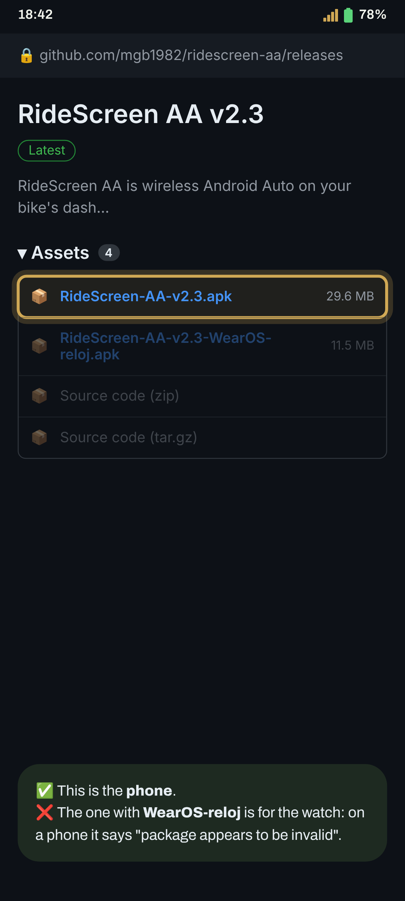
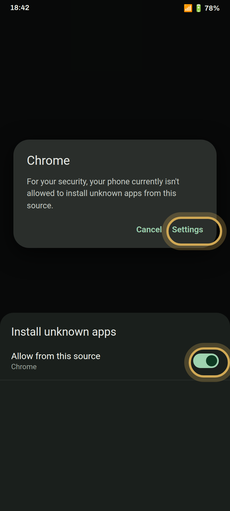
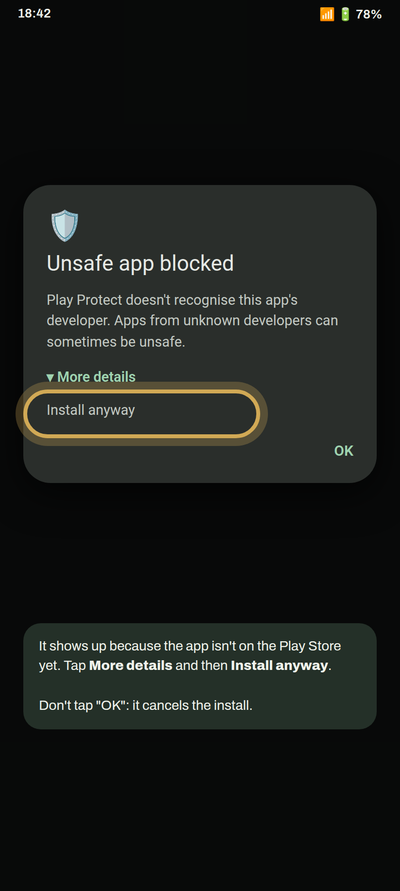
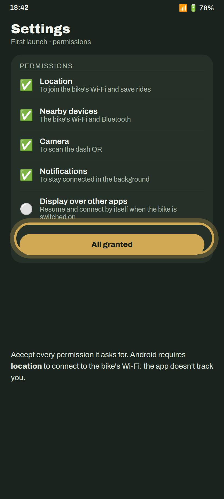
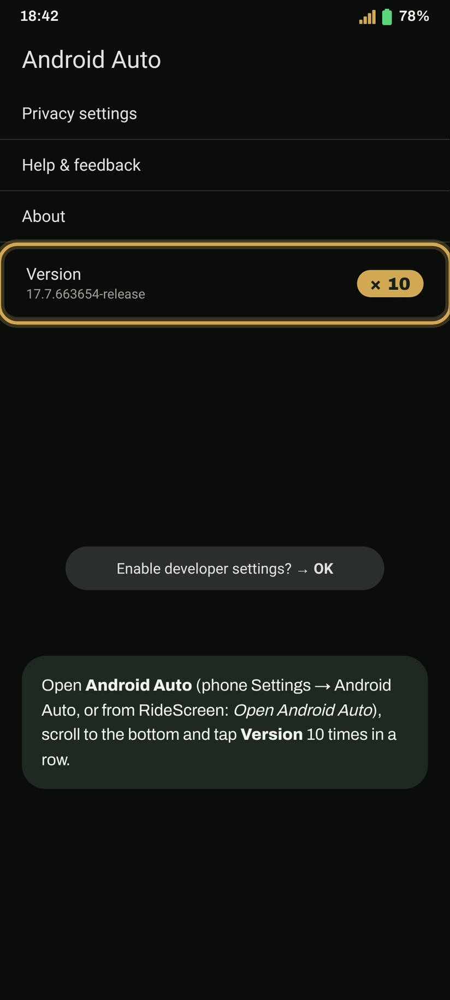
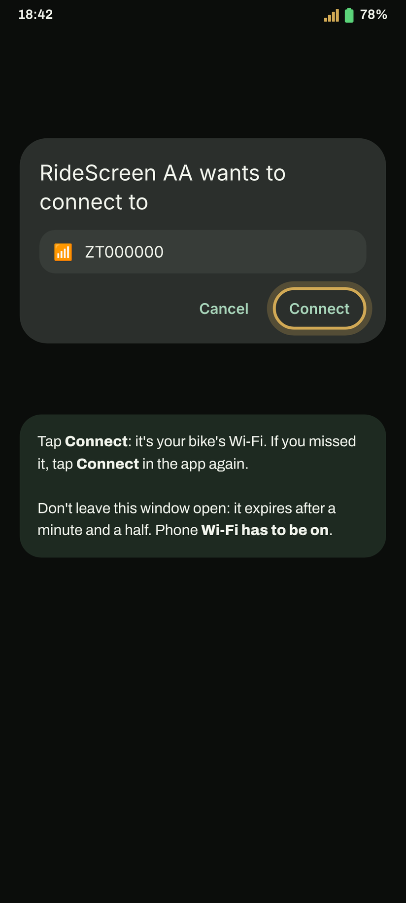

Install and connect in 10 minutes
Android Auto on your Zontes dash, step by step. The first time takes a few minutes; after that it's one tap, or none.
Got a Wear OS watch? Carry on with the watch guide afterwards.
- An Android 10 or newer, 64-bit phone (almost any from the last 5 years).
- Android Auto installed and up to date from the Play Store. Open it once and accept its terms.
- Phone Wi‑Fi switched on. You don't need to be connected to any network.
- If you have the bike's official app (Zontes / EasyConnection / Carbit), close it: Settings → Apps → that app → Force stop.
- The bike switched on and parked, for the first pairing.
Install the app
-
Download the phone APK
Tap the button: the latest version downloads directly (RideScreen-AA-v2.3.apk or whichever is current).
Download the APKPrefer GitHub? On the latest release page, under Assets, tap the APK that starts with RideScreen-AA-v.
Don't download the one marked WearOS-reloj: it's for the watch, and on a phone it says "package appears to be invalid".
-
Allow installs from your browser
Open the downloaded file. If Android says it can't install apps from this source, tap Settings, turn on Allow from this source and go back.
Then tap Install.

-
If Play Protect pops up, install anyway
It appears because the app isn't on the Play Store yet. Tap More details and then Install anyway.
If you tap OK the install is cancelled. You can repeat it by opening the APK again.
-
Open RideScreen and accept the permissions
The first time, Settings opens. Accept every permission it asks for, or tap All granted to check them all at once.
Android requires location to join the bike's Wi‑Fi and to save your rides. The app doesn't track you.

Set up Android Auto
-
Turn on developer mode
Open Android Auto settings (phone Settings → Android Auto, or from RideScreen). Scroll to the bottom and tap Version 10 times in a row. Accept the warning.
You only need to do this once.

-
Start the head unit server
On the same screen, tap ⋮ (top right) → Start head unit server.
This is the step people forget most. It turns off every time you restart the phone or Android Auto updates. If one day it won't connect, just repeat this step.
Pair with the bike
-
Scan the dash QR
On the dash, switch to the screen mirroring interface (screen 3 on the 125X): the phone projection screen, which shows a QR code. In RideScreen tap Scan (at the bottom, under More) and point the camera at it.
The QR under Information is not the right one: scan the one on the screen mirroring interface. Leave the dash on that screen while it connects.
-
Accept the bike's Wi‑Fi
Tap Connect in RideScreen. Android asks whether the app may connect to the bike's Wi‑Fi (it's named after your bike, e.g. ZT…). Tap Connect.
Be quick: the prompt expires after a minute and a half. If you miss it, tap Connect in the app again.
-
Done: Android Auto on the dash
A few seconds later Android Auto appears on the bike's screen. You can put your phone in your pocket.
Next time, just tap Connect. To have it connect by itself when you start the bike: ⚙️ Settings → Connect when a Bluetooth device joins → pick the dash's Bluetooth (it starts with "ZT") and allow Display over other apps.
Tip: once connected, you can switch the dash to another interface to see the original dash. The app stays connected and keeps logging the ride, and when you go back to the screen mirroring one Android Auto is there straight away.
The first time you connect, the app asks for the microphone: choose While using the app so you can use "Ok Google" and your intercom's voice button.

What the app says and what to do
"App not installed" / "package appears to be invalid"When installing the APK
- Check you downloaded RideScreen-AA-v….apk and not the watch one (WearOS-reloj).
- If the download was cut off, the file is damaged: delete it and download it again on a good connection.
- If it says "not compatible", your phone is 32-bit or runs Android 9 or older. Let us know your phone model.
- If you had Alexandru's official OpenCfMoto, uninstall it first: they're signed with different keys.
"Approve the phone's Wi‑Fi / device picker…"When connecting
- The bike's Wi‑Fi prompt appeared and wasn't accepted in time. Tap Connect again and accept straight away.
- If the prompt never shows up: the bike must be on and nearby, with the dash on the screen mirroring interface.
- If it shows but never connects, check you scanned the QR on the screen mirroring interface and not the Information one. If in doubt, scan it again.
"Grant Nearby devices / Bluetooth, then tap Connect again"When connecting
- The Nearby devices permission is missing; Android requires it to connect to the bike's Wi‑Fi and Bluetooth.
- Phone Settings → Apps → RideScreen AA → Permissions → Nearby devices → Allow. Then tap Connect.
"Phone Wi‑Fi is off"When connecting
Turn on Wi‑Fi on your phone. You don't need to join any network: the app joins the bike's by itself.
"Close the official app, then reconnect"When connecting
The bike's official app (Zontes / EasyConnection / Carbit) is holding the connection to the dash. Settings → Apps → that app → Force stop, then Connect again. If you don't use it, the easiest thing is to uninstall it.
"Android Auto didn't attach" / connects and disconnectsBike Wi‑Fi connected, but no Android Auto
- It's almost always the head unit server (step 6): the app shows a notice with an Open Android Auto button. There, ⋮ → Stop head unit server, then Start it again (even if it looked started: sometimes it hangs).
- After restarting the phone you always need to start it again.
- Don't uninstall Android Auto updates: you don't need to, and it makes things worse.
Connects the first time, but not after restarting the bikeAfter switching off and on
- When you switch on, put the dash on the screen mirroring interface and wait about 20–30 seconds: the app finds the bike by itself.
- If there's still no picture, tap Stop and then Connect in RideScreen.
- If you've restarted your phone in the meantime, start the head unit server first (step 6).
I want to see the original dash without disconnectingOther interfaces
- Always connect on the screen mirroring interface (screen 3 on the 125X): it's the only one where the dash turns on its Wi‑Fi. If you try from another one, the app will say it can't find the bike's Wi‑Fi.
- Once Android Auto is showing, switch to another interface whenever you like: the app stays connected, logs the ride and Android Auto keeps running in the background.
- Go back to the screen mirroring interface and Android Auto is there straight away, no reconnecting.
None of the aboveHow to get help
In RideScreen tap ❓ Help → Share logs right after the failure, and send it to the group saying which bike and phone you have. Logs don't include passwords or serial numbers.
RideScreen AA is free and open source, based on OpenCfMoto by Alexandru (zanderp). It is not an official Zontes app. Screenshots are illustrative: exact wording may vary on your phone.